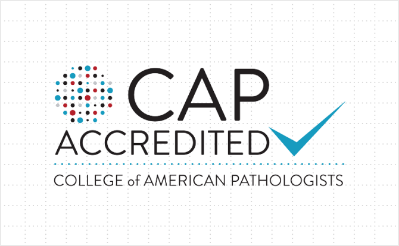
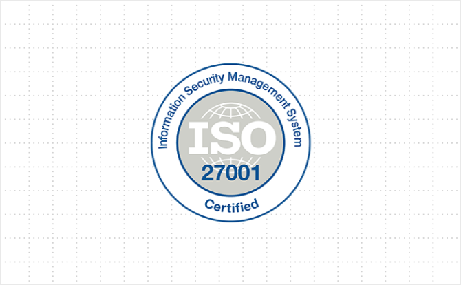

@@include('../../html/include/components/header-white.html')
Certification & Accreditation
Global standard
for genomics
for genomics
Our technological excellence has been recognized around the world.
@@include('../../html/include/components/scrollWrap.html')
Quality Management System
ISO 9001
ISO 9001 is an international standard
enacted by the International Organization for Standardization (ISO), certifying quality assurance over the entire production process for goods and services. This certification aims to prevent quality-related issues while furnishing products and services that meet customer requirements. This certification is given to quality management systems in which customers can have confidence.
Macrogen’s headquarters and Psomagen (Macrogen USA) obtained the ISO 9001 certification from the British Standards Institution (BSI) in order to increase customer trust and satisfaction. Through this certification, we have established company-wide quality objectives and policies, as well as detailed regulations for our work processes. This has allowed us not only to improve the efficiency of our management practices, but also to achieve cost savings, improved profits, and enhanced competitiveness.

Quality Management System for Clinical Diagnostics
GMP Accreditation
GMP (Good Manufacturing Practice, Medical device manufacture and quality control standards) is the system accredited by the Ministry of Food and Drug Safety for consumer safety. It is a quality control standard that ensures the manufacture and supply of high-quality medical products, and it is applied to the entire process of the manufacture, from raw material purchase, manufacture, packaging, storage and shipment, as well as the structure of the facility.
In February 2019, Macrogen received [NGS-based in-vitro diagnostic reagent GMP] from the Ministry of Food and Drug Safety, confirming the stability and effectiveness of our in vitro diagnostic reagent manufacturing technology. With this accreditation, Macrogen can launch and offer its clinical diagnostic product directly to the market.

GCLP Accreditation
The GCLP (Good Clinical Laboratory
Practice) is a quality standard for laboratories that analyze blood and urine samples for clinical trials that was established by the Ministry of Food and Drug Safety in accordance with the Amendment to the Pharmaceutical Affairs Act published in October 2017. It mandates that the analysis of samples required for clinical trials be conducted by an authorized sample analysis institution and aims to ensure that clinical trials of pharmaceuticals are safe and based on science. Clinical trial specimen analysis institutions conduct specimen analysis tests on blood and urine collected from clinical trial subjects and are designated by the Minister of Food and Drug Safety in accordance with the Pharmaceutical Affairs Act and Regulations on the Safety of Drugs, etc.
Macrogen was accredited as a clinical sample analysis institution by the Ministry of Food and Drug Safety in May 2019. As the first institution in Korea that can analyze samples through NGS technology, we are committed to strengthening the competitiveness of domestic clinical trials by providing reliable analysis services.
CAP Accreditation
The CAP (College of American Pathologists) Laboratory Accreditation Program begun in 1961, and it internationally recognized and known to be the largest of its kind. The U.S. federal government recognizes the CAP accreditation as being equal to or more stringent than the government’s inspection program. In order to receive CAP accreditation, a laboratory must demonstrate that it operates with the highest standards of quality, accuracy, and consistency.
Macrogen’s headquarters, Bundang Precision Medicine Center, Psomagen (Macrogen USA) and Macrogen APAC have been awarded the CAP accreditation for clinical diagnostic sequencing using NGS technology.

CLIA Certification
Macrogen received CLIA certification for its headquarters, Bundang Precision Medicine Center and Psomagen (Macrogen USA) to enter the domestic and overseas clinical diagnostics market. Backed by this CLIA certification, Macrogen provides various clinical diagnostics services as well as inspections of patients specimens.

Genetic Testing Accuracy Evaluation Certification
As genetic testing for medical and research purposes became more commonplace, the Genetic Testing Accuracy Evaluation Certification was created to assess the accuracy of testing institutions and to encourage improvements in service quality and growth of the industry. The Korean Institute of Genetic Testing Evaluation, responsible for managing and supervising the certification, assesses the accuracy of test results, propriety of testing processes, conformity of testing facilities and equipment to standards, and qualifications of testing personnel. This is to prevent any confusion that may arise due to inaccurate genetic testing.
The molecular genetic testing services provided by Macrogen Headquarters maintain A-grade certification (P-grade when including items not covered by health insurance). By providing customers with reliable results, Macrogen contributes to national health and progress in the national bioscience fields.

NGS Clinical Laboratory Certification
The NGS Clinical Laboratory Certification system, enforced by the Ministry of Food and Drug Safety since August 2016, is a system designed for the prompt availability of NGS-certified technologies in disease diagnostics and testing, including cancer genomic analyses and rare disease screening. Certifications are awarded based on a general evaluation of equipment, facilities, manpower, testing competencies, and quality control systems, and the reliability of test results.
Macrogen obtained NGS Clinical Laboratory Certification from the Ministry of Food and Drug Safety in April of 2017. Backed by this certification, Macrogen develops and provides various NGS-based clinical diagnostic testing services utilizing the latest technologies such as cancer panels and liquid biopsies.
Internationally Accredited Testing Laboratory
DAkkS and KOLAS Accreditation (ISO/IEC 17025)
Macrogen received international testing laboratory accreditation for “forensic genetics” from the German national accreditation body DAkkS in December 2016. In March 2017, Macrogen acquired international testing laboratory accreditation for “forensic DNA type analysis testing” from KOLAS (Korea Laboratory Accreditation Scheme), Korea’s accreditation body operating under the Korean Agency for Technology and Standards. DAkkS and KOLAS accreditation certifies that Macrogen’s DNA type analysis testing (relationship genetic testing) is recognized for its world-class reliability and advanced technology. Thanks to this accreditation, Macrogen is able to provide internationally certified test reports in accordance with the ISO/IEC 17025 국제표준규격에 따른 국제공인시험성적서를 제공할 수 있고, 국제적으로 통용될 수 있음을 뜻합니다. 또한 마크로젠이 발급한 해당 분야 시험성적서가 국제 시험소인 정기구협의체(ILAC)에 가입한 전 세계 94개국에서 상호 인증절차에 따라 자국에서 발급된 시험성적서와 동등한 효력을 가지게 되는 것이기도 합니다.
CSP Program
The CSP program is a mutual service cooperation program among suppliers of genetic analysis platforms such as genetic analysis equipment, microarrays, and testing kits, and companies furnishing services using these platforms. The program ensures that only the highest quality services are provided to customers.
To provide quality services that inspire customer confidence, Macrogen is a member of the CSP (Certified Service Provider) program alongside Illumina, Pacific Biosciences, Life Technologies, Thermo Fisher Scientific, and Agilent Technology. Through its in-house service quality management system and participation in the CSP program, Macrogen complies with the service quality standards established by genetic analysis platform suppliers. This allows Macrogen to not only supply high-quality services, but also to work with genetic analysis platform suppliers in joint marketing and support programs to provide customers with added benefits.


Information Management System
ISO27701 Certification
ISO27701 is the most prestigious international standard privacy certification established by the International Organization for Standardization (ISO) in August 2019. Macrogen is the only company in the industry that has acquired all three of the best information protection certificates in Korea and internationally.
※ Period of validity : 2021.06.22 ~ 2024.06.21

ISMS-P Certification
Macrogen acquired the ISMS-P certification to establish a thorough management system of all information needed in precision medicine, an objective indicator that proves that customer information and genomic data can be secured. ISMS-P, which Macrogen acquired for the first time in the industry, is the best security management system in Korea jointly announced by the Ministry of Science and ICT and the Privacy Commission.
※ Period of validity : 2021.03.03 ~ 2024.03.02

ISO/IEC 27001:2013 Certification
ISO/IEC 27001 is the international security standard from the International Organization for Standardization (ISO) and the International Electrotechnical Commission (IEC) and is regarded as the top-grade international standard certification. To receive the latest ISO/IEC 27001 certification, organizations must demonstrate compliance with 114 information security controls in 14 areas including information security policies, physical and environmental security and access control, etc.
Macrogen has become the first biotechnology company to successfully achieve both Korea Personal Information Management System (PIMS) and International Information Security (ISO/IEC 27001) certification.
※ Period of validity : 2021.03.03 ~ 2024.03.02
